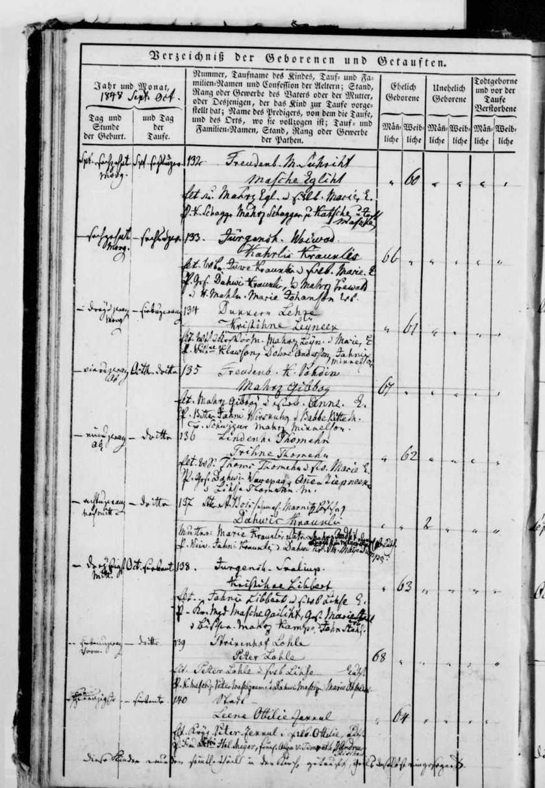
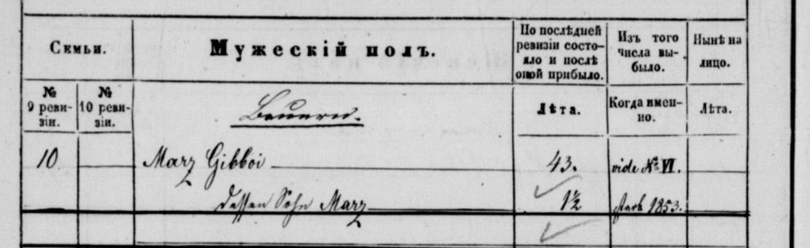

Mārcis 1848–1853
Peter's 3× great-uncle.
Mārcis was born on 3 Oct 1848 in Podiņi farm, Priekuļi, Cēsis district, Vidzeme, Latvia2, the son of Mārcis Gibboy and Anna Mežciema2,4,6,8. He died in 1853 in Priekuļi, Cēsis district, Vidzeme, Latvia6,7.
Family
- Parents
- Mārcis Gibboy b. 1807 and Anna Mežciema b. 1819 documented
Life events
| Event | Date | Place and details |
|---|---|---|
| Born | 3 Oct 1848 | Podiņi farm, Priekuļi, Cēsis district, Vidzeme, Latvia Old Style (Julian) date: 21 Sep 1848 Preferred version: Automatic: the best-supported value (primary records count most; the 2015 tree least). Not yet reviewed; add a preference in data/curation/structure.yaml.2 |
| Born | 1849 | According to an online family tree3 |
| Lived | 25 Sep 1850 | Priekuļi, Cēsis district, Vidzeme, Latvia Old Style (Julian) date: 13 Sep 18504,5 |
| Died | 1853 | Priekuļi, Cēsis district, Vidzeme, Latvia6,7 |
Records



Sources
- MyHeritage family tree 'Dzimta' of Peter's third cousin (his family site), member GEDCOM export of 26 Oct 2026, I500945 (person-6500945), GEDCOM lines 24567–24578.
NAME Mārcis //
- Cēsis rural birth register 1848, entry no. 135 (Mahrz Gibboij), LVVA f. 235, apr. 7, l. 104, image 25, 1848 no. 135, LVVA f. 235, apr. 7, l. 104, image 25.
[Spt.] ein u. zwanzig Ab | Octbr. dritten | 135 Freudenb. K. Pohdin Mahrz Gibboij Elt. Mahrz Gibboij u s Wb. Anne. L. Tf. Bittes Jahni Wirskaln u Babbe Bitte W. W. Schwiggur Mahrz Mikkelson.
Translation: [September] 21st in the evening | October 3rd | No. 135, Freudenberg Kalna-Podiņi: Mahrz Gibboij. Parents: Mahrz Gibboij and his wife Anne, Lutheran. Godparents: Bites Jahni Wirskaln and farmer's wife Babbe Bitte; Vec-Švīguļi Mahrz Mikkelson.
Cēsis rural Lutheran birth register 1848, entry no. 135 (legitimate male no. 67): Mahrz Gibboij, born on the evening of 21 September 1848 O.S. (= 3 October 1848 N.S.) at Freudenberg Kalna-Podiņi ('Freudenb. K. Pohdin'), baptised 3 October 1848 O.S. (= 15 October 1848 N.S.). Parents: Mahrz Gibboij and his wife Anne, Lutheran ('Elt. Mahrz Gibboij u s Wb. Anne. L.'). Godparents: Jahni Wirskaln of Bites and farmer's wife Babbe Bitte, and Mahrz Mikkelson of Vec-Švīguļi ('Tf. Bittes Jahni Wirskaln u Babbe Bitte W. W. Schwiggur Mahrz Mikkelson.'). The Bites godparents connect directly to Anne Meschzeem's residence at Bites in her 1847 marriage entry, and Vec-Švīguļi is where Mārcis Ģibols Sr. grew up in the 1816/1826 revisions.
- MyHeritage family tree 'Dzimta' of Peter's third cousin (his family site), member GEDCOM export of 26 Oct 2026, I500945 (person-6500945), GEDCOM lines 24567–24578.
BIRT · 1849
- Priekuļi (Freudenberg) soul revision 1850, family 10 (Marz Gibboi), LVVA f. 199, apr. 1, l. 112, image 291 (pp. 295v–296), LVVA f. 199, apr. 1, l. 112, image 291.
10. | Marz Gibboi, Knecht[?] | aus No. XVI | 43. / dessen Sohn Marz | 1849 nachgeboren | 1½. ‖ 10. | dessen Frau Anne Gibboi | 31.
Translation: Family 10: Mārcis Gibboi, farmhand[?], from farm XVI, 43; his son Mārcis, born 1849, 1½. His wife Anne Gibboi, 31.
1850 soul revision, family 10: Marz Gibboi, Knecht[?], 'aus No. XVI' (from the Podiņi farm), 43; his son Marz, born 1849, 1½; his wife Anne Gibboi, 31. The farm is not named on this frame; the 1857 list puts him at no. XIV (Luste) in 1850.
- MyHeritage family tree 'Dzimta' of Peter's third cousin (his family site), member GEDCOM export of 26 Oct 2026, I500945 (person-6500945), GEDCOM lines 24567–24578.
… un dēlu Mārci (1 1/2) dzīvo IV Lustes mājās, Priekuļos
His note (on his father Mārcis, I500599) on the 1850 soul revision, http://lvva-raduraksti.lv/lv/menu/lv/13/ig/14/ie/5962/book/32503.html, frame 291.
- Priekuļi (Freudenberg) soul revision 1857, Luste farm (XIV), family 10 (Marz Gibboi), LVVA f. 77, apr. 14, l. 344, image 27 (p. 22v), LVVA f. 77, apr. 14, l. 344, image 27.
10 | Marz Gibboi | 43. | vide No. VI. / dessen Sohn Marz | 1½ | starb 1853.
Translation: Family 10: Mārcis Gibboi, 43 [at the last revision], see no. VI; his son Mārcis, 1½, died 1853.
The 1857 revision's list for the Luste farm (XIV) of those entered there in 1850: 'Marz Gibboi, 43, vide No. VI [moved to Rauguļi]; his son Marz, 1½, starb 1853 [died 1853]'.
- MyHeritage family tree 'Dzimta' of Peter's third cousin (his family site), member GEDCOM export of 26 Oct 2026, I500945 (person-6500945), GEDCOM lines 24567–24578.
DEAT · 1853 · AGE 3-4
- MyHeritage family tree 'Dzimta' of Peter's third cousin (his family site), member GEDCOM export of 26 Oct 2026, family F500231: I500945 Mārcis, child of I500599 Mārcis Gibboy × I500600 Anne Gibboy.
His note on his father (I500599): 1850 soul revision of Priekuļi, frame 291, 'dēlu Mārci (1 1/2)': son Mārcis, 1½.